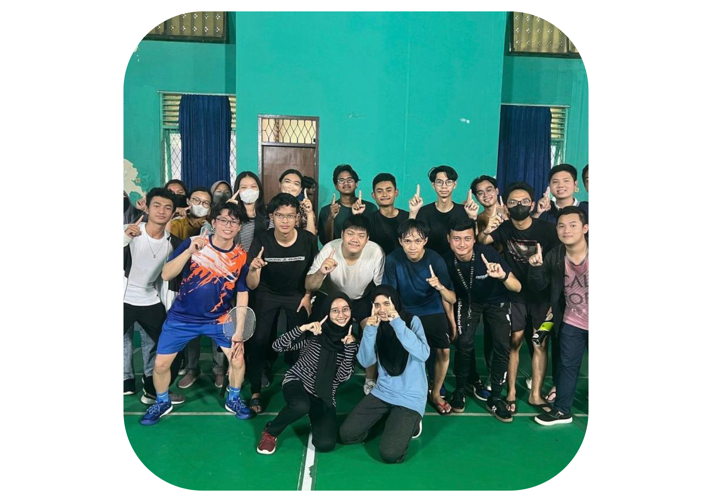
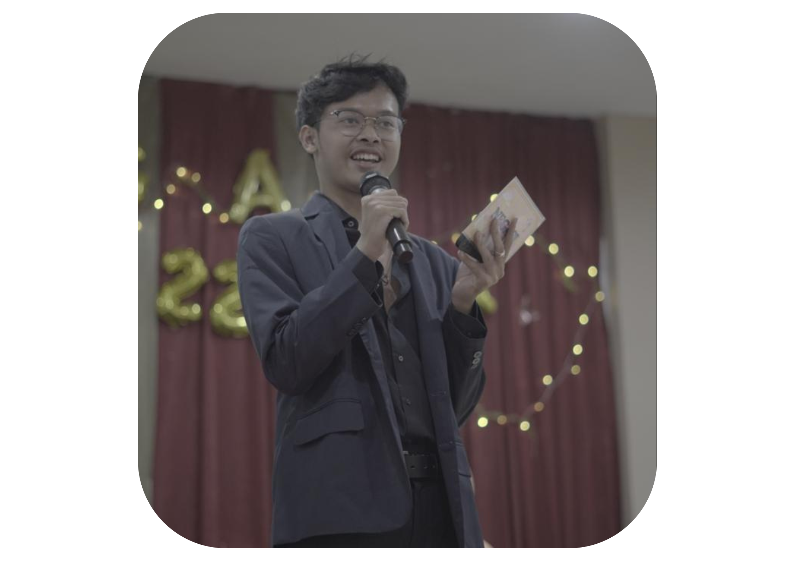
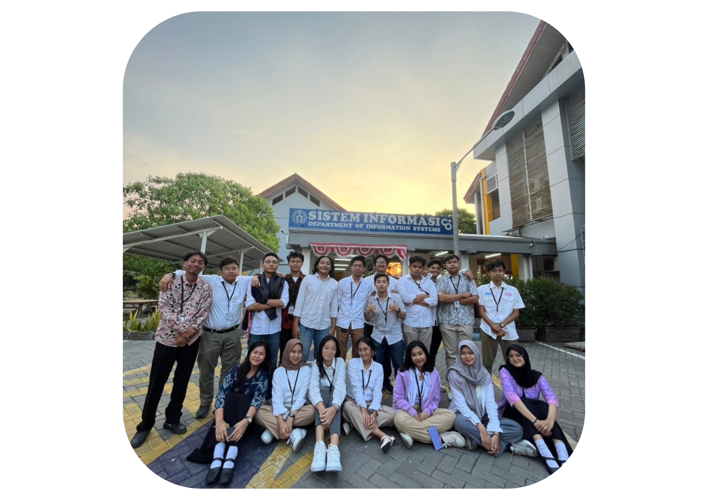

Portofolio
Juara 1 Mabacup ITS 2022
Berhasil membawa tim Departemen Sistem Informasi Mendapatkan Juara 1 di MABACUP ITS 2022 cabang olahraga Badminton tepatnya di regu ganda campuran.
Master Of Ceremony Negasi
Menjadi Master of Ceremony di acara Negasi (Night Gathering Of System Information) atau malam keakraban departemen sistem informasi 2022, yang diselenggarakan di BG Junction
Best Staff OKKBK HMSI
Mendapatkan penghargaan Best Staff divisi Acara pada acara Orientasi Keprofesian dan Kompetensi Berbasis Kurikulum Departemen Sistem Informasi 2023